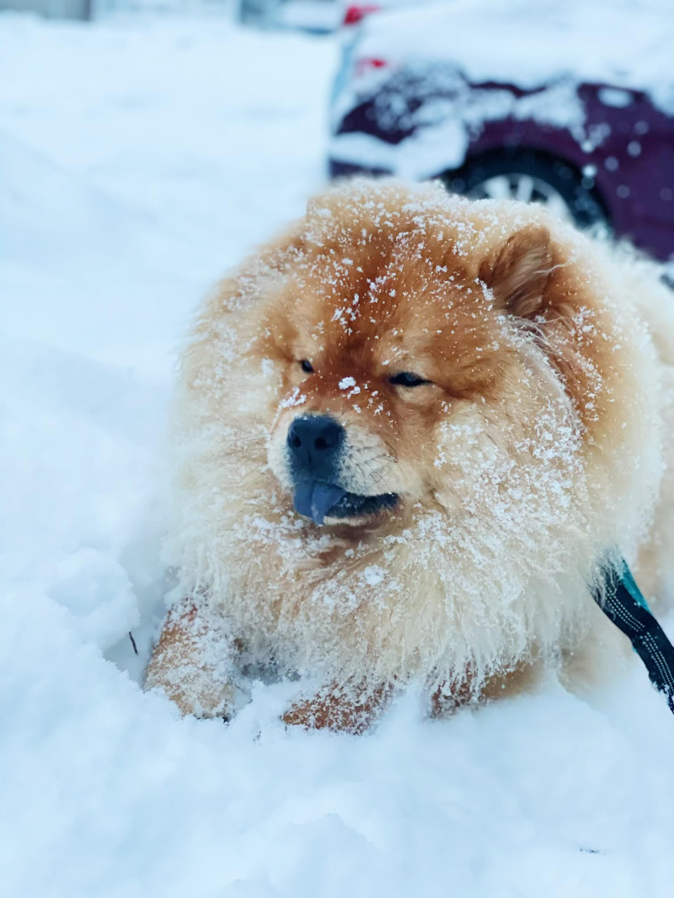

I'm Kenny!
I am based out of Boston, Massachusetts.
I am a former investment banker and by learning how to develop software I hope to:
- Build my own website to sell merchandise.
- Learn new skills in an industry that never stops evolving.
- Work with others on some really cool projects.
Please feel free to contact me anytime!
About Me
After graduating from college in 2017 with a degree in biology, I worked as a first responder for a year.
After that I became an investment banker for 3 years.
I also have a son named Bowser. Most of our free time is spent on trails and dog parks.
Contact
Please feel free to reach out.